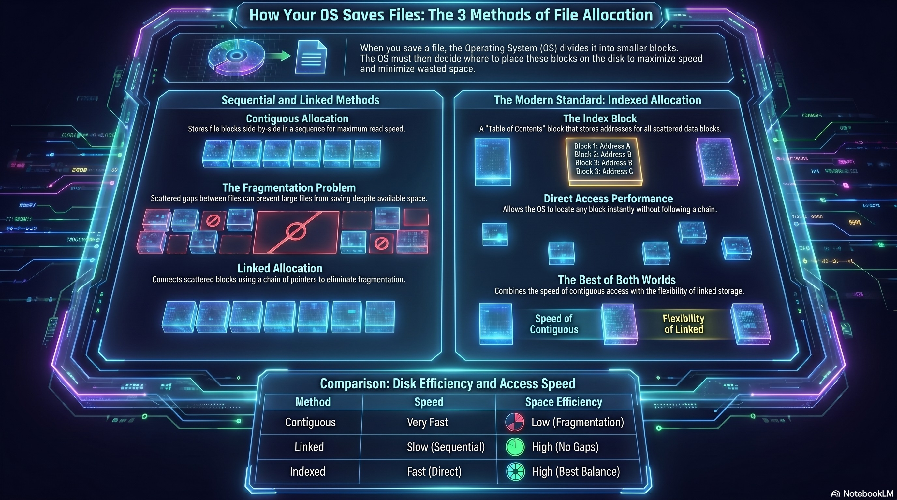
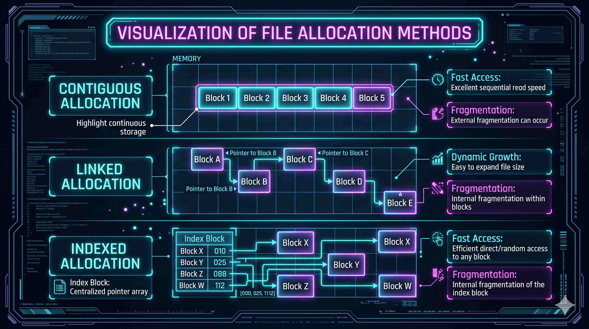

File Allocation Methods are techniques used by the Operating System to store
files on secondary storage devices such as hard disks and solid-state drives. Since storage
space is divided into fixed-size memory blocks, the Operating System must decide how these
blocks will be allocated to files efficiently.
The main objectives of file allocation are:
Efficient storage utilization
Fast file access
Reduced memory wastage
Easy file management
Better system performance
Contiguous Allocation stores all blocks of a file in consecutive memory locations. For example, if a file
requires four blocks, the Operating System allocates four continuous blocks together on the
disk.
Working Principle
The Operating System stores the Starting block address and the
Length of the file. Using this information, any block of the file can be
accessed directly and quickly.
Advantages
Very fast file access
Simple implementation
Efficient sequential access
Supports direct access easily
Disadvantages
Suffers from External Fragmentation
Difficult to expand files dynamically
Requires continuous free space
External Fragmentation
As files are created and deleted repeatedly, small free spaces appear between occupied
blocks. Even if enough total memory exists, allocation may fail because sufficient
continuous space is unavailable. This problem is called External
Fragmentation.
Linked Allocation stores file blocks in different scattered
locations across the disk instead of continuous memory positions. Each block
contains File data and a Pointer to the next block. The OS
follows these pointers sequentially to access the complete file.
Working Principle
The directory stores the starting block address of the file. Each block points to the next
block until the entire file is accessed.
Advantages
No External Fragmentation
Supports dynamic file growth
Better memory utilization
Flexible storage allocation
Disadvantages
Slower file access
Random access is inefficient
Pointer storage creates overhead
Corrupted pointers may break file chains
Key Feature
Linked Allocation allows files to grow dynamically because new blocks can be added anywhere
on the disk.
Indexed Allocation uses a special memory block called an Index Block. The index block stores the addresses of
all blocks belonging to a file. Instead of storing blocks continuously or linking them
directly, the OS first accesses the index block and then locates the required data blocks.
Working Principle
Each file has One Index Block and Multiple scattered data
blocks. The index block acts like a table containing references to all file
locations.
Advantages
Supports direct access
No External Fragmentation
Efficient file retrieval
Flexible memory allocation
Disadvantages
Requires additional memory for index block
Slightly more complex implementation
Small files may waste index space
Key Feature
Indexed Allocation combines flexibility and efficient access, making it one of the most
effective allocation methods used in modern Operating Systems.
Visuals & Infographics

Overview
Methods Comparison
External Fragmentation

Disk Block Allocation Visualization
Quick Facts
Real World Usage of File Allocation Methods
Video Library
Formal Explanation
The Warehouse Story
Deep Dive Audio
System Dev Lab
Review the actual Python source code of our simulator on the left, and execute the web-compiled
version on the right.
os_simulator.pyPYTHON 3.10
import random
classOSDiskSimulator:
def__init__(self, size=100):
self.size = size
self.disk = ["."] * size
self.file_metadata = {}
defdisplay_disk(self):
# Formats the 1D physical disk array into a 10x10 gridfor i in range(0, self.size, 10):
row_string = ""for j in range(i, i + 10):
row_string = row_string + self.disk[j] + " "print("Block " + str(i) + " | " + row_string)
defallocate_contiguous(self,
file_id, length):
# Strict sequential block search
count = 0
start_idx = -1
for i in range(self.size):
if self.disk[i] == ".":
if count == 0: start_idx = i
count += 1
if count == length:
for j in range(start_idx,
start_idx + length):
self.disk[j] = file_id
return Trueelse:
count = 0 # Reset search due to fragmentationreturn Falsedefallocate_linked(self, file_id,
length):
free = [i for i in
range(self.size) if self.disk[i] == "."]
if len(free) < length: return
False
selected = random.sample(free, length)
for idx in selected:
self.disk[idx] = file_id
return Truedefallocate_indexed(self,
file_id, length):
free = [i for i in
range(self.size) if self.disk[i] == "."]
if len(free) < length + 1: return
False
selected = random.sample(free, length + 1)
index_block = selected[0]
self.disk[index_block] = "I"for b in selected[1:]:
self.disk[b] = file_id
return Truedefdeallocate(self,
file_id):
if file_id not in
self.file_metadata: return False
meta = self.file_metadata[file_id]
for b in meta["blocks"]:
self.disk[b] = "."if meta["type"] == "Indexed":
self.disk[meta["index"]] = "."del self.file_metadata[file_id]
return True
OS Terminal EmulatorLIVE
System initialized. Memory array ready... Awaiting
commands...